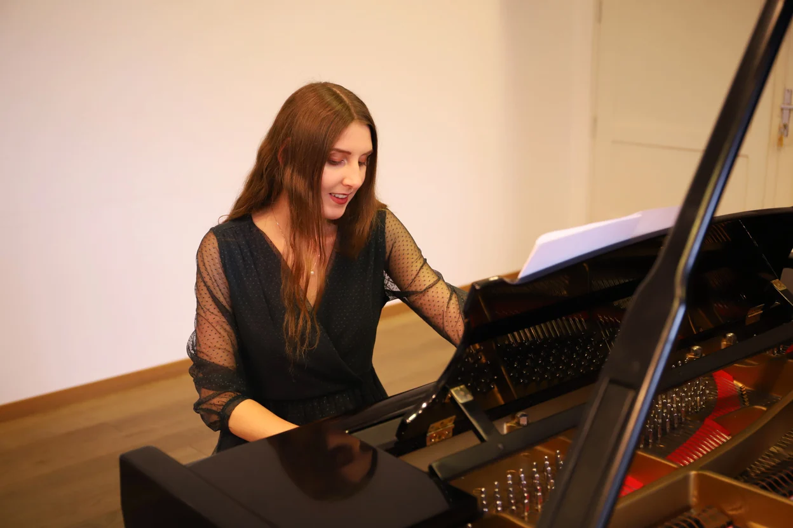
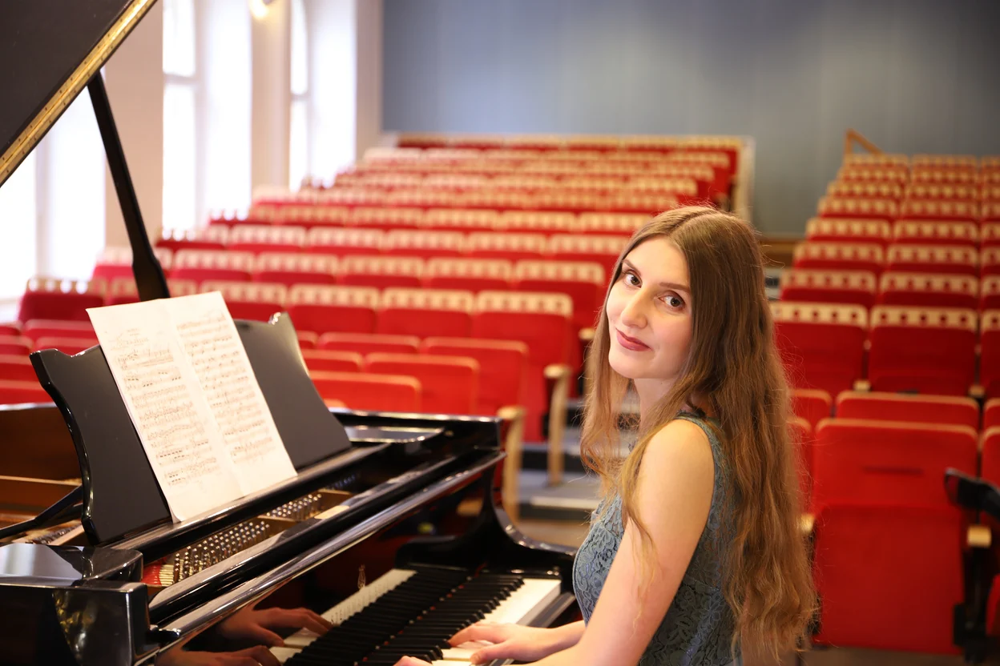
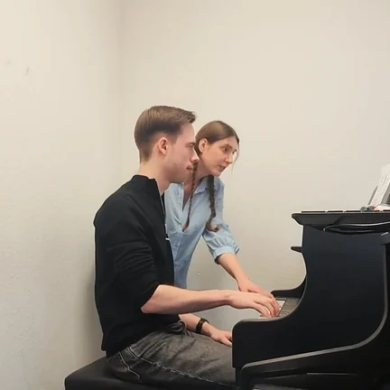
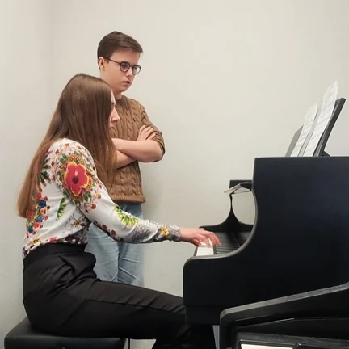
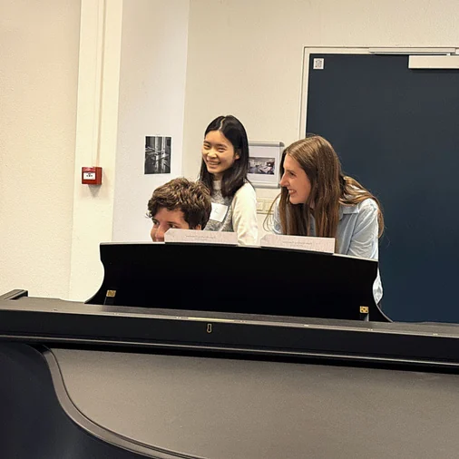
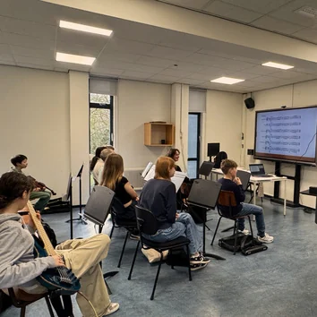
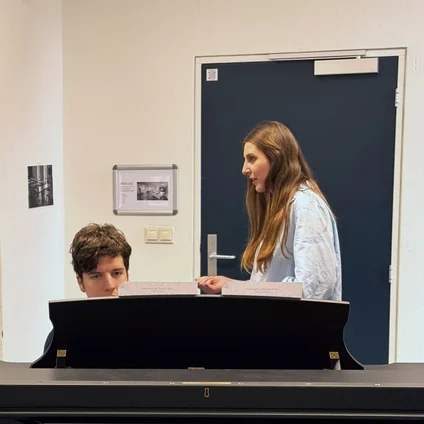

Piano Lessons with Rozálie
In Maastricht & Online
For musicians of all levels and ages
- 5 years of teaching experience
- BA in Classical Piano at the Conservatorium Maastricht (NL) and a Teaching Certificate
- Students with smiles on their faces
- Guidance that sparks your imagination

Check my hourly rates“Piano lessons that capture your heart
Guidance that captivates your fantasy”
The Art of Teaching
As a piano teacher, I share my knowledge and experience. I am open to musicians of all levels, and I work with patience, reliability, and warm respect.
During my teaching practice, I realized how important it is to encourage my students' imaginations and allow them to fully appreciate the unique connection between music and fantasy.
Thanks to my personalized guidance and exercises, my students can revive emotions and tell stories that are close to their hearts through music.
They create music that is truly meaningful.
Motivation & Method
I have always been interested in teaching. I admired the art of giving a well-structured, inspiring piano lesson. During my studies, I successfully completed specialized training in “Advanced Teaching Skills,” earning a Teaching Certificate and gaining knowledge of psychology, didactics, and piano pedagogy. I work with private students of all levels and ages, from children to adults and beginners to advanced players. I also teach at the Junior Department of the Conservatorium Maastricht, guiding a class of young, classically trained musicians.
By adjusting my lessons to each student's needs, I create a safe space where music comes alive. The core value of a lesson is not only to develop technique but also to build a unique connection between music and fantasy.
As a pianist, I have gained a wide range of professional experiences that enrich my pedagogical approach.
My method is partly inspired by British educationalist Paul Harris and his concept of “Simultaneous Learning.” This approach builds musical insight by connecting aural and memory work, sight-reading, mental practice, and harmony awareness.
I am supportive of the challenges that might appear on the journey of playing piano.
My lessons stand for patience, reliability, warm respect, expertise, and creativity.


Since 2025, Rozálie has taught at the Junior Department of the Conservatorium Maastricht.



Teaching in practice: workshops, group lessons, and individual guidance.
Read my professional biographyOnline Piano Lessons
You don't need any special equipment — a tablet or laptop is sufficient. Lessons usually take place through platforms such as Zoom, Google Meet, or Teams, using a webcam, shared scores, presentations, or a whiteboard.
After booking, we arrange the lesson time together.
Reviews
“Rozálie has been working with my son for two years now, and he has definitely improved. He is usually excited about playing piano and enjoys the creative approach of the lessons.”
Mariana Stanford
“I would like to thank Rozálie for her endless patience regarding my practice of scales and arpeggios. Her lessons merge professionalism, joy, and imagination exercises that really work. I can only recommend taking lessons with her!”
Pedro Ituralde
“I had an online lesson with Rozálie regarding a phrasing issue in one of my Chopin pieces. The lesson was not only thoroughly prepared but also very effective. Many thanks again!”
Anita Cooke